Loading...

Unleash the Power of Locks with a Magical Touch!
Practice and interaction are the very keys, for they unlock the door to prosperity and accomplishment.
Weary souls plagued by the woes of hair loss! In my realm, hair is not just a mere adornment; it's a symbol of power, allure, and confidence.
Now, we're diving into the world of cutting - edge anti - hair loss adventure, where science meets magic and mind meets mind. It's a world where we'll shatter the chains of hair loss and rewrite the rules of beauty. Join me as we explore how our groundbreaking research is not just changing lives but also challenging societal norms, empowering communities, and redefining what it means to embrace one's natural beauty. Let the transformation begin!
Overall Pipeline
Workflow

Pipeline

Sketch
This winter, our Integrated Human Practices (IHP) embarked on an exploration in the challenging field of anti - hair loss solutions through the MEDUSA project.
In the problem identification stage, we surveyed a large number of individuals suffering from hair loss, as well as consulted dermatologists and trichologists. Their insights and real - world experiences highlighted the urgent need for a more effective, non - invasive anti - hair loss treatment. This led us to focus on the potential of soluble microneedle - based drug delivery systems for scalp therapy.
For concept generation, we delved into scientific literature and emerging technologies. We explored the latest research on hair follicle biology, drug delivery mechanisms, and biomaterials. Ideas such as using natural polymers to enhance the biocompatibility of microneedles and encapsulating growth factors for targeted hair growth stimulation emerged.
Ethical considerations were at the forefront throughout the project. We consulted ethicists and legal experts to ensure that all aspects of our research, from animal testing (if any) to potential human trials, adhered to strict ethical guidelines. We also engaged with patient advocacy groups to understand their concerns and ensure that our project respected the rights and well - being of those affected by hair loss.
In the initial design phase, we collaborated with bioengineers and material scientists. We designed the structure of the soluble microneedles, considering factors like needle length, diameter, and drug - loading capacity. The goal was to create a system that could efficiently deliver anti - hair loss drugs to the scalp while minimizing discomfort.
During the refinement stage, we held in - depth discussions with pharmaceutical and medical experts. Based on their feedback, we optimized the drug formulation and the release kinetics of the microneedles. We also considered different manufacturing processes to improve the scalability and cost - effectiveness of the product.
For experimental consultancy, we worked closely with researchers experienced in in vitro and in vivo testing. They provided valuable advice on setting up experiments to test the efficacy of our soluble microneedle - drug delivery system, such as which cell lines and animal models to use, and how to measure hair growth parameters accurately.
The final design incorporated all the learnings from previous stages. We finalized the microneedle design, drug composition, and delivery protocol. We also focused on the packaging and storage requirements to ensure the stability and shelf - life of the product.
Product manufacturing was planned with an eye on quality control and large - scale production. We explored partnerships with manufacturing companies that specialized in medical devices and pharmaceutical products. We aimed to develop a manufacturing process that could meet the high - volume demands of the market while maintaining strict quality standards.
Sustainability analysis was a crucial part of our project. We evaluated the environmental impact of our product, from the sourcing of raw materials to the disposal of used microneedles. We explored biodegradable materials and eco - friendly manufacturing processes to minimize our carbon footprint.
In the entrepreneurship design stage, we developed a business model. We identified potential market segments, such as individuals with androgenetic alopecia, alopecia areata patients, and those seeking preventive hair loss treatments. We also planned marketing strategies, considering how to reach our target customers through various channels, including dermatology clinics, online platforms, and hair salons.
Finally, we achieved the closed loop through extensive interaction with all stakeholders. We received feedback from potential consumers, healthcare providers, and future industry partners, which we used to further improve our product. This continuous improvement cycle not only demonstrated our commitment to IHP but also laid a solid foundation for a successful and sustainable future in the anti - hair loss market.
Creation of MEDUSA: From brainstorm to products
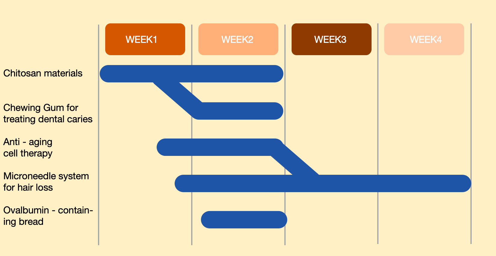
Figure 1: a compact flow of how our ideas progressed through time
Our very first brainstorming direction was Chitosan materials. We wanted to explore its potential uses in various fields such as biomedicine, food packaging, and environmental protection. After researching chitosan materials, we noticed its antibacterial and adhesive properties could be potentially beneficial in oral health. This led us to the second idea, Chewing gum for treating dental caries. We thought about incorporating chitosan into chewing gum. The chitosan in the gum could help prevent the growth of bacteria that cause dental caries, and its adhesive nature might enable it to adhere to the teeth surface for a longer-lasting effect. We discussed different formulas for the chewing gum, considering factors like the optimal concentration of chitosan, flavorings to make it appealing to consumers, and the texture of the gum base.
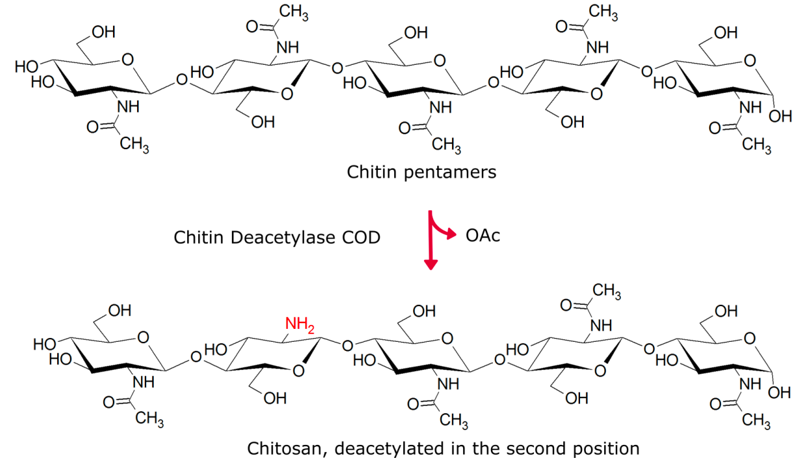
Then, we turned our attention to Anti - aging cell therapy. We studied the latest research on stem cells, senescent cells, and cell - based rejuvenation techniques. We learned about how certain types of stem cells could potentially replace damaged or aging cells in the body, and the methods to target and eliminate senescent cells. This research on anti - aging cell therapy inspired our fourth brainstorming direction, Microneedle treatment for hair loss. We realized that the concept of using a minimally - invasive delivery system, similar to the cell - delivery methods in anti - aging therapies, could be applied to hair loss treatment. Microneedles could create tiny channels in the scalp, allowing for more efficient delivery of drugs or growth factors that promote hair growth. We discussed the design of the microneedles, the choice of drugs to be delivered, and the frequency of treatment sessions.
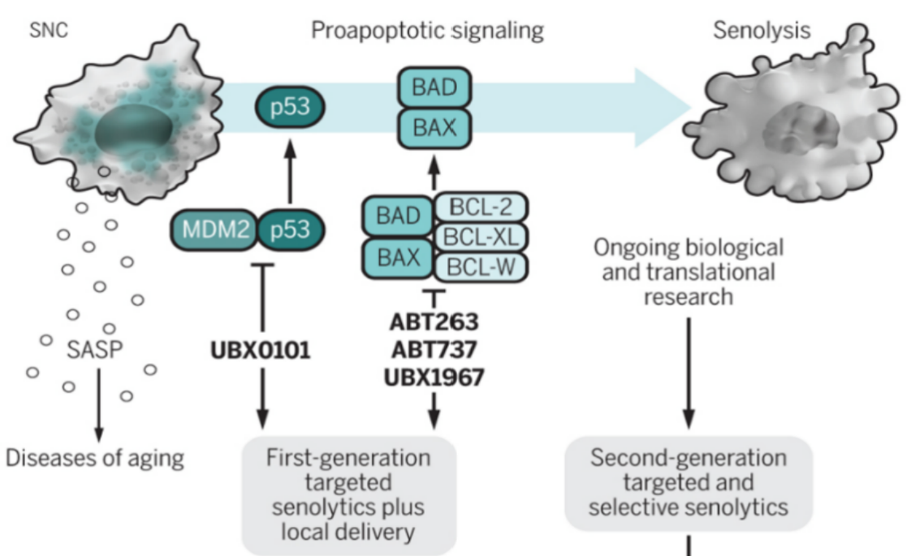
Our initial goal was to develop a product that could completely reverse hair loss in a short period. However, as we delved deeper into the research and development process, we realized that the complexity of hair follicle biology made this an overly ambitious target. We adjusted our goal to focus on significant hair regrowth and improved hair density over a reasonable time frame. This adjustment was based on the scientific evidence we gathered during our studies and the practical limitations of the technology.
IHP Guiding Principles
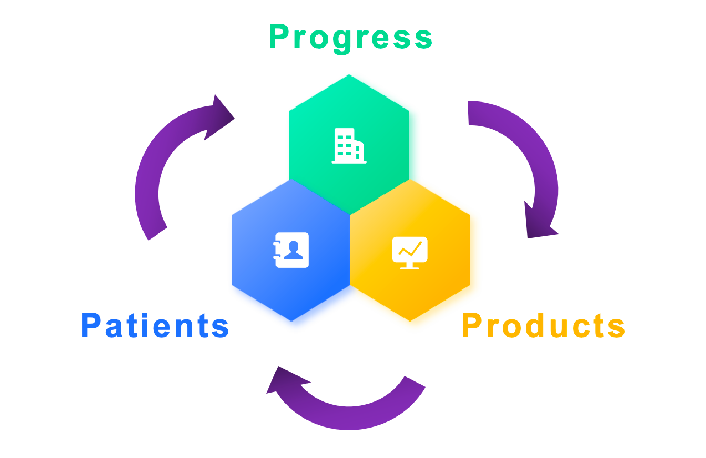
Patients
We place ourselves in the shoes of those affected by hair loss. This means actively listening to their stories, struggles, and aspirations. By truly empathizing, we can develop solutions that not only address the physical aspects of hair loss but also the emotional toll it takes. For example, we conduct in - depth interviews and hand out questionnaires with individuals who have experienced hair loss due to various causes like genetics, stress, or medical treatments. These personal accounts help us understand the complex impact on self - esteem, social interactions, and daily life, guiding every step of our project.
Products
We ensure that our project considers the diverse needs of all individuals with hair loss, regardless of age, gender, ethnicity, or socioeconomic background. Different populations may experience hair loss differently, and our solutions should be accessible and effective for everyone. This involves collaborating with diverse communities, consulting with experts from various fields, and conducting research that represents a wide range of demographics. For instance, when developing our soluble microneedle - based treatment, we test its efficacy and safety on different skin types and hair textures, which are often associated with different ethnic groups.
Process
Our goal is to create anti - hair loss solutions that are not only effective in the short - term but also sustainable in the long - run. This includes using environmentally friendly materials in the production of our microneedles and considering the full life - cycle of our product, from raw material extraction to disposal. We also adhere to strict ethical guidelines in all aspects of our research and development, ensuring that no harm is caused to animals during testing and that our practices are transparent and accountable.
Problem
Tune in to the world
Microneedle treatment for hair loss has become a popular option in recent years. The main approach involves using a device with tiny needles, like a derma roller or dermapen, to create micro - punctures on the scalp. This process stimulates blood circulation in the scalp, promotes the production of collagen, and enhances the penetration of topical hair - growth products, such as minoxidil.
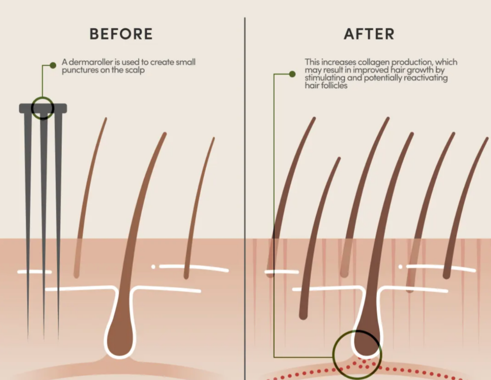
In terms of cost, the price varies depending on whether it is a professional treatment or at - home use. Professional microneedle treatments in clinics usually range from a few hundred to several thousand dollars per session, and multiple sessions are often required. At - home derma rollers are relatively affordable, with prices typically ranging to $100, but they may NOT be as effective as professional treatments. The market for microneedle treatment for hair loss is expanding due to the increasing awareness of hair loss issues. It is popular among both men and women suffering from androgenetic alopecia, which is the most common form of hair loss. As for treatment results, studies have shown that when combined with other therapies like minoxidil or platelet - rich plasma (PRP) injections, microneedling can improve hair growth in many cases. However, it also has limitations. Microneedling may not work for everyone, especially those with severe hair loss or hair loss caused by certain medications like chemotherapy drugs. Additionally, improper use, especially in at - home treatments, can lead to risks such as infection and skin damage. The hair loss market is gradually expanding, and the number of people in need is also increasing.
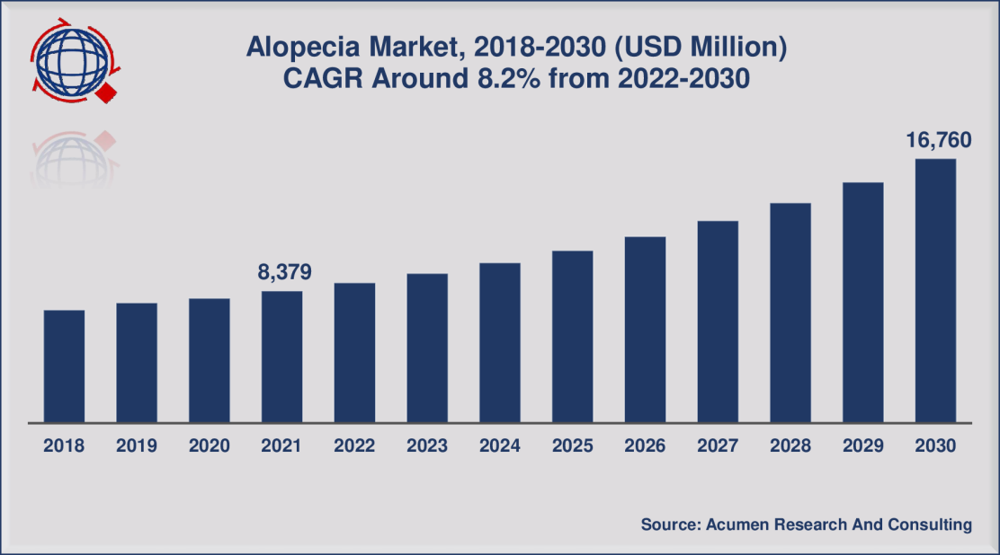
Figure 2: hair loss market
Development of Hair Loss Treatment
Over the years, hair loss treatments have evolved from simple topical solutions like minoxidil to more complex surgical procedures such as hair transplants. However, each of these methods has its limitations. Topical treatments often require long - term use and may have limited effectiveness for some individuals. Surgical procedures are invasive, expensive, and carry risks. Our project aims to bridge this gap by developing a novel soluble microneedle delivery system. This technology allows for the targeted delivery of therapeutic agents directly to the scalp, enhancing the effectiveness of the treatment while minimizing side - effects. We studied the existing literature on microneedle technology, hair follicle biology, and drug delivery mechanisms to design a system that could revolutionize hair loss treatment. By combining the latest advancements in materials science and pharmacology, we hope to create a treatment that is more efficient, convenient, and accessible than current options.
Recognition of those Involved
Stakeholders Recognition
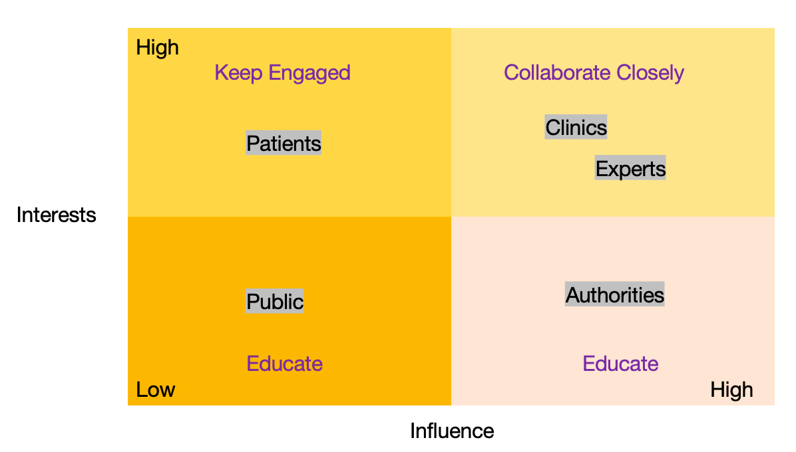
At the same time, we conducted a detailed classification of stakeholders involved in the project. Drawing inspiration from the Mendelow's Matrix, we analyzed stakeholders based on their influence and interest in the project, and outlined key actions for engaging with them in Intergrated Human Practices, Education and Entrepreneurship effectively.
Stakeholders Analysis
Patients and Public
We recognize the central role of patients in our project. Their experiences and feedback are invaluable. We establish patient advisory groups where individuals with hair loss can share their concerns, expectations, and suggestions directly with our research team.
Experts and Trichologists
These medical professionals provide crucial clinical insights. They help us understand the underlying causes of hair loss, evaluate the effectiveness of our treatment, and offer guidance on patient care. We collaborate with them in clinical trials and seek their input on the design of our treatment protocol.
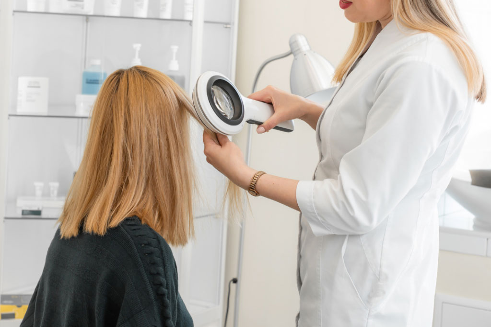
Investors and Authorities
Our investors provide the financial resources necessary for the project's success. We keep them informed about the project's progress, share research updates, and involve them in strategic decision - making processes.
Expertise in the Process
Person to meet (Example)
| Module & Parts | Types of Experts to Consult | Cooperation Goals | Stakeholders |
|---|---|---|---|
| Cell - free System for AbTAC Production (Cure Module) | Protein chemists | Optimize the cell - free production process of AbTAC for higher yield and purity. | Pharmaceutical companies interested in cell - free production technologies |
| Biochemists | Study the biochemical properties of AbTAC produced in the cell - free system to ensure its biological activity. | Academic research institutions focused on protein production | |
| E. coli - based KGF Production (Growth Module) | Microbiologists | Improve the E. coli strain for more efficient KGF production, such as optimizing gene expression. | Biotech startups working on microbial - based protein production |
| Genetic engineers | Modify the genetic circuit in E. coli to enhance the stability and consistency of KGF production. | Seed and culture suppliers for E. coli | |
| Soluble Microneedle Design Module | Biomaterial scientists | Select and develop suitable materials for soluble microneedles with good biocompatibility and drug - release characteristics. | Microneedle manufacturing companies |
| Mechanical engineers | Design the physical structure of soluble microneedles, including needle shape, length, and density for optimal drug delivery. | Equipment manufacturers for microneedle production | |
| Patient Group Care Parts | Dermatologists and trichologists | Provide professional medical advice on hair loss treatment and patient care, and help understand the medical needs of patients. | Hair loss patient support groups |
| Psychologists | Offer insights into the psychological impact of hair loss on patients and suggest ways to address patient concerns. | Patient advocacy organizations | |
| Commercialization Parts | Market researchers | Conduct in - depth market research to identify market size, trends, and target customer groups. | Potential investors |
| Business strategists | Develop a comprehensive business strategy, including pricing, distribution, and marketing plans. | Pharmaceutical distributors and retailers | |
| Intellectual property lawyers | Assist in patent applications and intellectual property protection to ensure the commercial competitiveness of the product. | Patent agencies |
People to meet (Example)
| Module | Cooperative Organizations/Teams | Academic Forums/Conferences/Summits |
|---|---|---|
| Cell - free System for AbTAC Production (Cure Module) | Other iGEM teams focusing on cell - free protein production - Protein engineering research teams in renowned universities like MIT's protein engineering lab | Protein Production and Engineering Summit - International Conference on Cell - free Systems |
| E. coli - based KGF Production (Growth Module) | Synthetic biology research groups in institutions such as Harvard's Wyss Institute - Industrial biotechnology teams in biotech companies | Synthetic Biology China Congress - Microbial Biotechnology Conference |
| Soluble Microneedle Design Module | Biomaterials research groups at Tsinghua University - Microneedle R & D teams in medical device companies like 3M's medical R & D departmen | - World Biomaterials Congress - Microneedle Technology and Application Summit |
| Patient Group Care Module | Hair loss patient support associations like the American Hair Loss Association - Dermatology research teams in hospitals such as Mayo Clinic's dermatology department | World Congress of Dermatology - International Hair Restoration Surgery Symposium |
| Cell - free System for AbTAC Production (Cure Module) | Business incubation centers in high - tech parks - Market research firms specialized in the medical field like IQVIA | Healthcare Business and Investment Conference - Medical Device Commercialization Summit |
WORK HAVE DONE
Safety Concerns
Expert we contacted: Prof. Sir Walter Bodmer
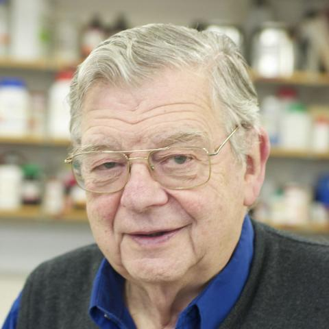
Head of the Cancer and Immunogenetics Laboratory, MRC WIMM
Research Interest: Oncology; Aging; Cell biology
What we want to know:
Will excessive stimulation of growth factors lead to cancer in hair follicle cells?
Response
Growth factors play a crucial role in regulating cell growth, proliferation, and differentiation. In the context of hair follicle cells, while they are essential for normal hair growth, excessive stimulation can potentially disrupt the normal regulatory mechanisms. There is a risk that uncontrolled activation of certain signaling pathways associated with growth factors could lead to genetic mutations and an increased likelihood of cancer development. However, it is important to note that the relationship is complex and depends on multiple factors such as the type of growth factor, the duration and intensity of stimulation, and the genetic background of the cells.
What we learnt:
We need to be extremely cautious when formulating our anti-hair loss treatment that involves growth factors. Precise control over the dosage and delivery of growth factors is essential to avoid over-stimulating hair follicle cells and potentially triggering cancerous changes. We should also conduct in-depth pre-clinical studies to better understand the safety profile of our product in relation to this concern.
Design Process
Expert we contacted: Prof. Danniel O'Connor
Associate Professor and Head of Bioinformatics at the Oxford Vaccine Group, University of Oxford, with expertise in both wet-laboratory techniques and bioinformatics.
Research Interest: Quantitative Biology; Immunology
What we want to know:
How can we use bioinformatics tools to analyze the gene expression patterns in hair follicle cells during the hair growth cycle and identify potential targets for our anti-hair loss treatment?
Response
Bioinformatics offers a powerful set of tools for analyzing large-scale genomic data. By comparing the gene expression profiles of healthy and hair-loss affected hair follicle cells, we can identify genes that are differentially expressed. These genes can potentially be targets for our treatment. For example, we can use algorithms to mine through RNA-seq data to find genes that are involved in key biological processes such as cell proliferation, differentiation, and angiogenesis in hair follicles. Additionally, network analysis can help us understand the interactions between different genes and proteins, which can provide insights into the underlying molecular mechanisms of hair loss.
What we learnt:
What are the most promising nanotechnology-based drug delivery systems for our anti-hair loss product, and how can we optimize them for efficient delivery of growth factors and other active ingredients to hair follicle cells?
Design Process
Expert we contacted: Prof. Danniel O'Connor
Professor in Biomedical Engineering at the University of Oxford and also the Director of the MSc in Nanotechnology for Medicine and Healthcare and the Associate Director of the Synthetic Biology CDT.
Research Interest: Drug Delivery
What we want to know:
What are the most promising nanotechnology-based drug delivery systems for our anti-hair loss product, and how can we optimize them for efficient delivery of growth factors and other active ingredients to hair follicle cells?
Response
There are several nanotechnology-based drug delivery systems with potential for hair loss treatment. Liposomes, for example, can encapsulate growth factors and protect them from degradation while facilitating their targeted delivery to hair follicle cells. Nanoparticles can also be engineered to have specific surface properties for enhanced cell uptake. To optimize these systems, we need to consider factors such as particle size, surface charge, and the choice of materials. For instance, smaller particles may have better penetration into the skin and hair follicles, while the surface charge can affect their interaction with cell membranes.
What we learnt:
Nanotechnology-based drug delivery systems offer great potential for our anti-hair loss product. We should conduct further research on different types of delivery systems and optimize their design parameters to ensure efficient and targeted delivery of our active ingredients. This will improve the efficacy of our treatment and reduce potential side effects.
Entrepreneurship
Expert we contacted: Dr Julian F. Dye
Dr. Dye initiated the ProMatrix project from the University of Oxford, UK, and focuses on advancing wound treatment in deep skin loss injuries by regenerative synthetic skin solutions. Julian founded Oxartis in September 2020, to build a platform technology of tissue regenerative products.
Research Interest: Wound Treatment; Synthetic Material
What we want to know:
What are the key considerations and challenges in commercializing an anti-hair loss product, especially in terms of market entry, intellectual property protection, and building a sustainable business model?
Response
Market entry requires a deep understanding of the target market, including the size, growth potential, and competitive landscape. Intellectual property protection is crucial to safeguard the uniqueness of our product. This involves filing for patents on novel technologies, formulations, or delivery systems. Building a sustainable business model requires careful consideration of cost-effectiveness, pricing strategies, and partnerships. For example, collaborating with established pharmaceutical or beauty companies can help in manufacturing, marketing, and distribution. However, it is also important to maintain control over key aspects of the product development and quality.
What we learnt:
Commercializing our anti-hair loss product is a complex process. We need to invest time and resources in market research, intellectual property management, and business model development. Strategic partnerships can be a valuable asset in the commercialization journey, but we must also be vigilant in protecting our interests.
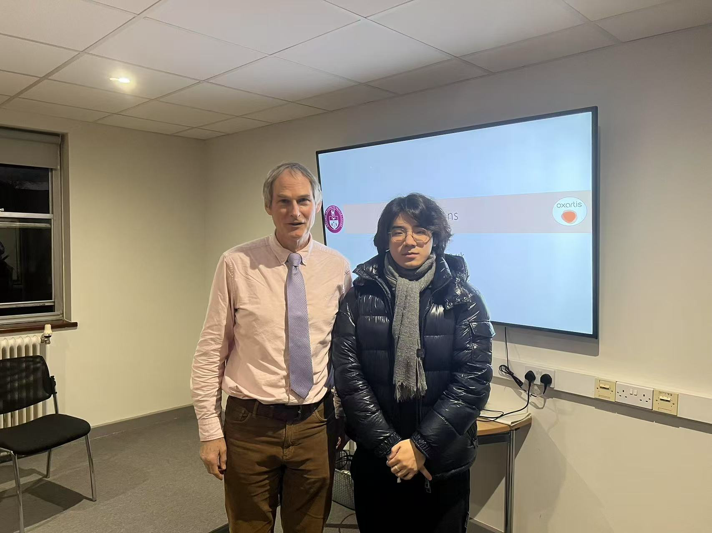
Ethical Concerns
Expert we contacted: Dr Ling Dong
Career Interest: Genetics; Microflow
What we want to know:
How does the company interact with its main customers (third-party technology service providers, scientific research institutions, and pharmaceutical companies) throughout the product life cycle, from design to after-sales service? And what measures does the company take to ensure product optimization based on customer feedback?
Response
Currently, the company's customers mainly include third-party technology service providers, scientific research institutions, and pharmaceutical companies. At the beginning of product design, we will have in-depth exchanges with customers, hoping to accurately grasp their understanding of the market. In the subsequent sales and after-sales service links, we maintain close communication with our cooperative customers, focusing on product usage and feedback. We strive to answer customers' questions in a timely manner during daily training, and at the same time, take the usage feedback as an important reference for the next-step product optimization.
What we learnt:
This customer-centric model is crucial for the company's long-term success in the market, as it ensures that the products remain relevant and competitive by adapting to the evolving needs of different customer segments.
Ethical Concerns
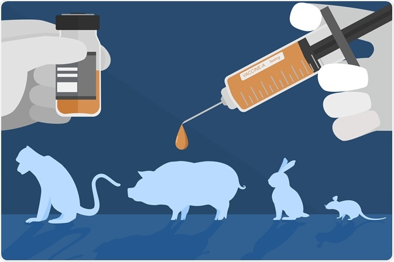
When conducting pre-clinical studies, we adhere to strict ethical guidelines regarding animal testing. We minimize the number of animals used, ensure their humane treatment, and explore alternative testing methods whenever possible. For example, we use in-vitro models and computer simulations to reduce the reliance on animal experiments.
In clinical trials involving human subjects, we obtain informed consent from all participants. We clearly explain the treatment process, potential risks, and benefits. We also protect the privacy and confidentiality of patient data, ensuring that it is stored securely and only used for research purposes.
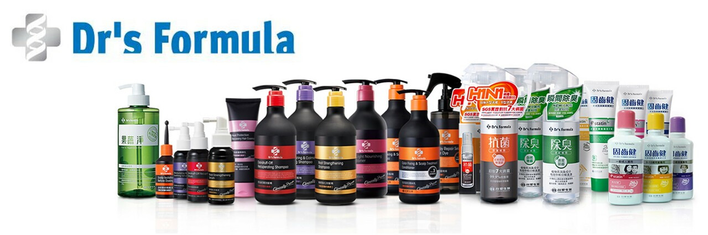
We are dedicated to addressing multiple ethical concerns related to our anti-hair loss product. In terms of accessibility and equity, we aim to make it available to all in need by exploring cost-effective manufacturing and pricing, and considering global distribution, including collaborations with local entities in underprivileged areas. Regarding long-term impact, we closely monitor individual health for potential late-emerging side effects and ensure environmental sustainability through the use of biodegradable or recyclable materials while also considering energy and carbon footprint. On the societal front, we strive to promote a positive and inclusive view of hair loss, avoiding stigmatizing marketing and focusing on educating the public to foster confidence and self-acceptance among those affected.
For more information, click here to find out more.
Patients Friendly
In the design phase, we had to prioritize different needs and values. We placed a high priority on the safety and efficacy of the product. This meant conducting extensive pre-clinical and clinical trials, which were time-consuming and costly. However, ensuring the well-being of the users was non-negotiable.
We also prioritized the affordability and accessibility of the treatment. To achieve this, we had to make some compromises in terms of the choice of materials and manufacturing processes. For example, we selected cost-effective yet biocompatible materials for the microneedles, even though they may not have been the most cutting-edge options available.
For more information, click here to find out more.
Brief on Entrepreneurship
Compared to traditional hair loss treatments such as minoxidil and finasteride, our approach offers several advantages. These existing treatments often have limited efficacy and can cause side effects. Our soluble microneedle delivery system allows for more targeted and efficient delivery of the active ingredients, potentially increasing the treatment's effectiveness and reducing systemic side effects.
Outside of synthetic biology and biotechnology, some alternative solutions include herbal remedies and hair transplant surgeries. Herbal remedies may lack scientific validation of their efficacy, while hair transplant surgeries are invasive and expensive. Our approach combines the precision of modern biotechnology with a relatively non-invasive delivery method, offering a more attractive option for many patients.
For more information, click here to find out more.
Close the Loop
We establish multiple channels for feedback collection. Patients can provide feedback through online surveys, phone calls, or in - person consultations. Healthcare providers can also share their experiences and suggestions. We analyze this feedback regularly to identify areas for improvement. Based on the feedback, we make iterative improvements to our product and treatment protocol. If patients report difficulties in using the application device, we modify the design. If healthcare providers suggest changes to the treatment dosage, we conduct further research to evaluate the proposed changes. That's how our project meets our idea.